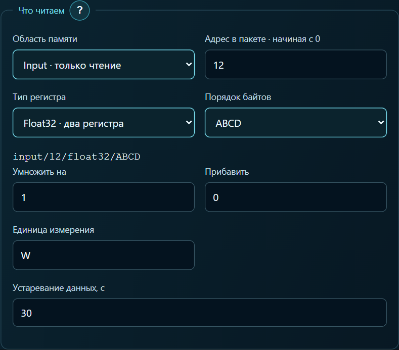

Активная мощность счётчика Eastron на планшете
На экране уже есть температура из Home Assistant. Рядом хочется видеть, сколько ватт сейчас потребляет дом. Разберём подключение на примере Eastron SDM120-Modbus с интерфейсом RS-485. Понадобятся ARAAMA 0.1.10 и настроенный сетевой шлюз, к которому подключён счётчик.
Настройка панели
Подключите планшет к сети шлюза. В ARAAMA укажите IP и порт шлюза. Если шлюз преобразует Modbus TCP в RTU, выберите Modbus TCP. Если он прозрачно передаёт кадры RTU по сети, выберите RTU поверх TCP. В поле Unit ID укажите адрес самого счётчика. Скорость и чётность на стороне RS-485 должны совпадать у шлюза и счётчика.
Создайте тег «Активная мощность». В таблице Eastron строке 30013 соответствует начальный адрес 0x000C. В поле адреса с отсчётом от нуля введите 12. Выберите входные регистры (функция 04), тип Float32 и порядок ABCD, если шлюз передаёт байты в исходном порядке. Одно показание занимает два регистра, единица — ватт. Множитель 1, смещение 0. Карта регистров Eastron, стр. 5

Привяжите тег к числовой карточке и выведите на дисплей счётчика активную мощность. При ровной нагрузке сравните оба показания. Если дисплей показывает 0,72 кВт, на планшете ожидается около 720 Вт. Это пример пересчёта единиц. ARAAMA 0.1.10 и руководства